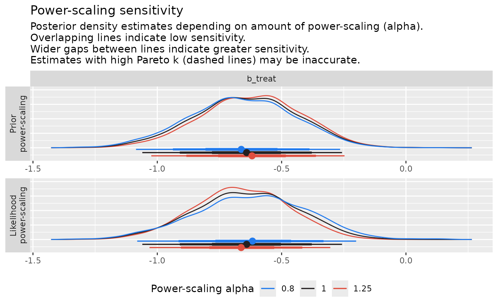

The create_priorsense_data.brmsfit method can be used to
create the data structure needed by the priorsense package
for performing power-scaling sensitivity analysis. This method is
called automatically when performing powerscaling via
powerscale or other related
functions, so you will rarely need to call it manually yourself.
Arguments
- x
A
brmsfitobject.- ...
Additional arguments passed to
log_lik, for examplenewdata.
Examples
# \dontrun{
# fit a model with non-uniform priors
fit <- brm(rating ~ treat + period + carry,
data = inhaler, family = sratio(),
prior = set_prior("normal(0, 0.5)"))
#> Compiling Stan program...
#> Start sampling
#>
#> SAMPLING FOR MODEL 'anon_model' NOW (CHAIN 1).
#> Chain 1:
#> Chain 1: Gradient evaluation took 0.000543 seconds
#> Chain 1: 1000 transitions using 10 leapfrog steps per transition would take 5.43 seconds.
#> Chain 1: Adjust your expectations accordingly!
#> Chain 1:
#> Chain 1:
#> Chain 1: Iteration: 1 / 2000 [ 0%] (Warmup)
#> Chain 1: Iteration: 200 / 2000 [ 10%] (Warmup)
#> Chain 1: Iteration: 400 / 2000 [ 20%] (Warmup)
#> Chain 1: Iteration: 600 / 2000 [ 30%] (Warmup)
#> Chain 1: Iteration: 800 / 2000 [ 40%] (Warmup)
#> Chain 1: Iteration: 1000 / 2000 [ 50%] (Warmup)
#> Chain 1: Iteration: 1001 / 2000 [ 50%] (Sampling)
#> Chain 1: Iteration: 1200 / 2000 [ 60%] (Sampling)
#> Chain 1: Iteration: 1400 / 2000 [ 70%] (Sampling)
#> Chain 1: Iteration: 1600 / 2000 [ 80%] (Sampling)
#> Chain 1: Iteration: 1800 / 2000 [ 90%] (Sampling)
#> Chain 1: Iteration: 2000 / 2000 [100%] (Sampling)
#> Chain 1:
#> Chain 1: Elapsed Time: 1.278 seconds (Warm-up)
#> Chain 1: 1.202 seconds (Sampling)
#> Chain 1: 2.48 seconds (Total)
#> Chain 1:
#>
#> SAMPLING FOR MODEL 'anon_model' NOW (CHAIN 2).
#> Chain 2:
#> Chain 2: Gradient evaluation took 0.000154 seconds
#> Chain 2: 1000 transitions using 10 leapfrog steps per transition would take 1.54 seconds.
#> Chain 2: Adjust your expectations accordingly!
#> Chain 2:
#> Chain 2:
#> Chain 2: Iteration: 1 / 2000 [ 0%] (Warmup)
#> Chain 2: Iteration: 200 / 2000 [ 10%] (Warmup)
#> Chain 2: Iteration: 400 / 2000 [ 20%] (Warmup)
#> Chain 2: Iteration: 600 / 2000 [ 30%] (Warmup)
#> Chain 2: Iteration: 800 / 2000 [ 40%] (Warmup)
#> Chain 2: Iteration: 1000 / 2000 [ 50%] (Warmup)
#> Chain 2: Iteration: 1001 / 2000 [ 50%] (Sampling)
#> Chain 2: Iteration: 1200 / 2000 [ 60%] (Sampling)
#> Chain 2: Iteration: 1400 / 2000 [ 70%] (Sampling)
#> Chain 2: Iteration: 1600 / 2000 [ 80%] (Sampling)
#> Chain 2: Iteration: 1800 / 2000 [ 90%] (Sampling)
#> Chain 2: Iteration: 2000 / 2000 [100%] (Sampling)
#> Chain 2:
#> Chain 2: Elapsed Time: 1.308 seconds (Warm-up)
#> Chain 2: 1.322 seconds (Sampling)
#> Chain 2: 2.63 seconds (Total)
#> Chain 2:
#>
#> SAMPLING FOR MODEL 'anon_model' NOW (CHAIN 3).
#> Chain 3:
#> Chain 3: Gradient evaluation took 0.000155 seconds
#> Chain 3: 1000 transitions using 10 leapfrog steps per transition would take 1.55 seconds.
#> Chain 3: Adjust your expectations accordingly!
#> Chain 3:
#> Chain 3:
#> Chain 3: Iteration: 1 / 2000 [ 0%] (Warmup)
#> Chain 3: Iteration: 200 / 2000 [ 10%] (Warmup)
#> Chain 3: Iteration: 400 / 2000 [ 20%] (Warmup)
#> Chain 3: Iteration: 600 / 2000 [ 30%] (Warmup)
#> Chain 3: Iteration: 800 / 2000 [ 40%] (Warmup)
#> Chain 3: Iteration: 1000 / 2000 [ 50%] (Warmup)
#> Chain 3: Iteration: 1001 / 2000 [ 50%] (Sampling)
#> Chain 3: Iteration: 1200 / 2000 [ 60%] (Sampling)
#> Chain 3: Iteration: 1400 / 2000 [ 70%] (Sampling)
#> Chain 3: Iteration: 1600 / 2000 [ 80%] (Sampling)
#> Chain 3: Iteration: 1800 / 2000 [ 90%] (Sampling)
#> Chain 3: Iteration: 2000 / 2000 [100%] (Sampling)
#> Chain 3:
#> Chain 3: Elapsed Time: 1.332 seconds (Warm-up)
#> Chain 3: 1.289 seconds (Sampling)
#> Chain 3: 2.621 seconds (Total)
#> Chain 3:
#>
#> SAMPLING FOR MODEL 'anon_model' NOW (CHAIN 4).
#> Chain 4:
#> Chain 4: Gradient evaluation took 0.000155 seconds
#> Chain 4: 1000 transitions using 10 leapfrog steps per transition would take 1.55 seconds.
#> Chain 4: Adjust your expectations accordingly!
#> Chain 4:
#> Chain 4:
#> Chain 4: Iteration: 1 / 2000 [ 0%] (Warmup)
#> Chain 4: Iteration: 200 / 2000 [ 10%] (Warmup)
#> Chain 4: Iteration: 400 / 2000 [ 20%] (Warmup)
#> Chain 4: Iteration: 600 / 2000 [ 30%] (Warmup)
#> Chain 4: Iteration: 800 / 2000 [ 40%] (Warmup)
#> Chain 4: Iteration: 1000 / 2000 [ 50%] (Warmup)
#> Chain 4: Iteration: 1001 / 2000 [ 50%] (Sampling)
#> Chain 4: Iteration: 1200 / 2000 [ 60%] (Sampling)
#> Chain 4: Iteration: 1400 / 2000 [ 70%] (Sampling)
#> Chain 4: Iteration: 1600 / 2000 [ 80%] (Sampling)
#> Chain 4: Iteration: 1800 / 2000 [ 90%] (Sampling)
#> Chain 4: Iteration: 2000 / 2000 [100%] (Sampling)
#> Chain 4:
#> Chain 4: Elapsed Time: 1.368 seconds (Warm-up)
#> Chain 4: 1.233 seconds (Sampling)
#> Chain 4: 2.601 seconds (Total)
#> Chain 4:
summary(fit)
#> Family: sratio
#> Links: mu = logit
#> Formula: rating ~ treat + period + carry
#> Data: inhaler (Number of observations: 572)
#> Draws: 4 chains, each with iter = 2000; warmup = 1000; thin = 1;
#> total post-warmup draws = 4000
#>
#> Regression Coefficients:
#> Estimate Est.Error l-95% CI u-95% CI Rhat Bulk_ESS Tail_ESS
#> Intercept[1] 0.55 0.09 0.37 0.73 1.00 5859 2805
#> Intercept[2] 2.24 0.22 1.82 2.67 1.00 4872 3034
#> Intercept[3] 1.06 0.44 0.23 1.93 1.00 5247 2957
#> treat -0.64 0.21 -1.06 -0.26 1.00 3927 3051
#> period 0.20 0.16 -0.11 0.52 1.00 5248 2878
#> carry -0.26 0.15 -0.57 0.04 1.00 4144 3420
#>
#> Further Distributional Parameters:
#> Estimate Est.Error l-95% CI u-95% CI Rhat Bulk_ESS Tail_ESS
#> disc 1.00 0.00 1.00 1.00 NA NA NA
#>
#> Draws were sampled using sampling(NUTS). For each parameter, Bulk_ESS
#> and Tail_ESS are effective sample size measures, and Rhat is the potential
#> scale reduction factor on split chains (at convergence, Rhat = 1).
# The following code requires the 'priorsense' package to be installed:
library(priorsense)
# perform power-scaling of the prior
powerscale(fit, alpha = 1.5, component = "prior")
#> # A draws_df: 1000 iterations, 4 chains, and 10 variables
#> b_Intercept[1] b_Intercept[2] b_Intercept[3] b_treat b_period b_carry disc
#> 1 0.68 2.3 2.10 -0.28 0.135 -0.44447 1
#> 2 0.68 2.5 1.69 -0.51 0.216 -0.44380 1
#> 3 0.45 1.9 0.32 -0.74 0.160 0.00077 1
#> 4 0.52 2.3 0.55 -0.78 0.087 -0.15648 1
#> 5 0.57 2.3 0.42 -0.94 0.050 -0.20753 1
#> 6 0.54 2.3 0.70 -0.16 0.347 -0.42252 1
#> 7 0.49 2.8 0.50 -0.61 0.277 -0.52163 1
#> 8 0.62 2.6 1.30 -0.74 0.091 -0.07153 1
#> 9 0.50 2.1 0.76 -0.31 0.186 -0.27950 1
#> 10 0.66 2.4 1.30 -0.63 0.230 -0.15803 1
#> Intercept[1]
#> 1 0.69
#> 2 0.68
#> 3 0.45
#> 4 0.52
#> 5 0.58
#> 6 0.54
#> 7 0.49
#> 8 0.62
#> 9 0.50
#> 10 0.66
#> # ... with 3990 more draws, and 2 more variables
#> # ... hidden reserved variables {'.log_weight', '.chain', '.iteration', '.draw'}
#>
#> power-scaling
#> alpha: 1.5
#> scaled component: prior
#> selection:
#> pareto-k: -0.13
#> pareto-k threshold: 0.72
#> resampled: FALSE
#> transform: identity
# perform power-scaling sensitivity checks
powerscale_sensitivity(fit)
#> Sensitivity based on cjs_dist
#> Prior selection: all priors
#> Likelihood selection: all data
#>
#> variable prior likelihood diagnosis
#> b_Intercept[1] 0.012 0.095 -
#> b_Intercept[2] 0.026 0.087 -
#> b_Intercept[3] 0.026 0.084 -
#> b_treat 0.075 0.125 potential prior-data conflict
#> b_period 0.025 0.082 -
#> b_carry 0.031 0.094 -
#> disc NaN NaN <NA>
#> Intercept[1] 0.011 0.095 -
#> Intercept[2] 0.026 0.087 -
#> Intercept[3] 0.026 0.084 -
# create power-scaling sensitivity plots (for one variable)
powerscale_plot_dens(fit, variable = "b_treat")

# }